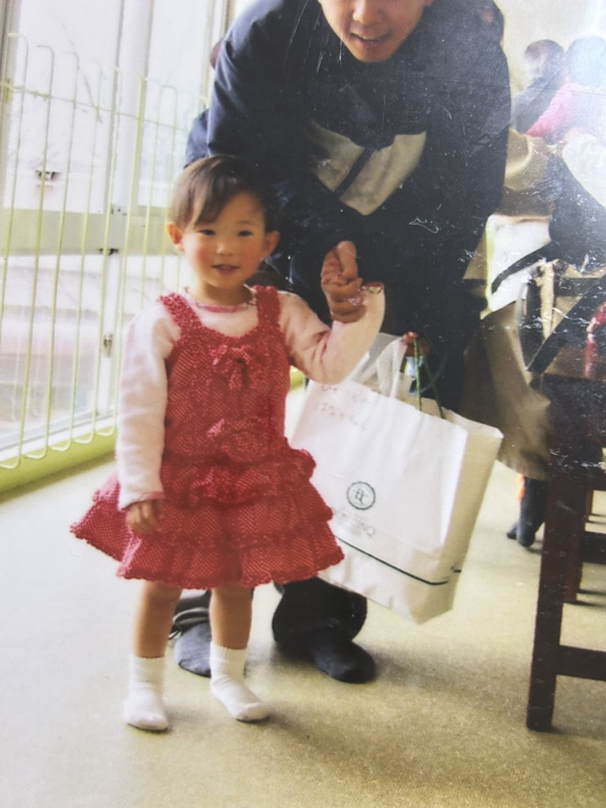

この写真は、幼少期の思い出を切り取ったもので、家族と一緒に福岡市動植物園に行ったときのものです。
私が幼少期の頃は、家の近くに動物園があったため、家族でよく動物園に行くことがありました。
そのため、この写真は家族との楽しいひとときを思い出す特別な瞬間を切り取っています。
また、私は人見知りが激しく、いつも母の後ろに隠れていたんです。思い出深い幼少期の姿が写真に写し出されています。
それだけでなく、運動が好きでよく怪我もしていたため、足や手があざだらけになることもよくありました。
この写真は家族との幸せな時間や、子どもらしい元気な姿が詰まった大切な思い出の一枚であり、ずっと大事にしています。